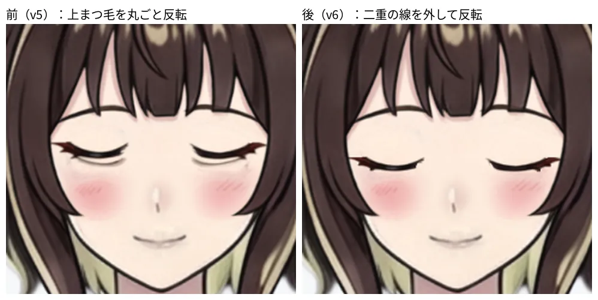

表情の作り方：パーツ分けとリグの前例・先行研究（研究ノート）
関連：表情・手振り差分の実験（研究ノート）（実験4が今回の試作）、表情差分の作り方（調査）
1. やりたいこと
- 知りたいこと：試作（実験4のパーツ分けの表情）が、なぜ「ズレて」見え、「白目に見え」、「可愛くない」のか。定石と何が違うのか
- 決めたいこと：改善の順
- 条件：このゲームは静止差分だけ
2. 先行研究・前例（要旨）
（調査はサブエージェント。URLは開いて確かめたものだけ）
Live2D の定石
目のパーツ分け
- 公式チュートリアル1：目は「まつ毛・目玉・白目」に分ける。目玉に隠れる白目も描き足す（目玉が動くと見えるため）。まつ毛は目尻の跳ねの部分から分けると変形しやすい。白目は目玉のクリッピング元にできる
- 公式マニュアル（素材分け）：細かく分けるほど品質が上がる。大きく動く部分と、他が動くと見える部分は先に描く。目の部品の細かい一覧は無い
- Modeling 101（フォーラム）の層順（上から）：二重線（任意）、上まつ毛、下まつ毛、上まぶた（上まつ毛の上を隠す）、下まぶた（目の下を隠す）、ハイライト（任意）、黒目、白目、顔。マスク機能を使えば上下のまぶた層は省ける
- Cubism 2 マニュアル（クイックモデリング）：
- まぶたは「目玉が動いた時や目を閉じた時に、目玉を隠す役割」。Cubism 2.0 にはクリッピングが無いので、隠すパーツが要った
- 目玉は上下左右に動くので、欠けが無いよう描き足す
- 「ハイライトを分けて、目を閉じる動作に連動させると綺麗に見えます」
- まつ毛のサイドを切って分けておくと、閉じ目を作りやすい
開閉パラメータと上まぶたの変形
- 標準パラメータ：目 開閉（ParamEyeL/ROpen）は 0〜1 で、+で開く。笑顔（ParamEyeL/RSmile）も 0〜1。目玉 X/Y は −1〜1
- 公式チュートリアル3：上まつ毛に「目 開閉」の2点キーを足し、0側で「まつ毛を閉じ目の形に変形」する。複雑な形は Deform Path で動かす
- 動かすのはまつ毛だけでない。笑い目の例（hoshinotomoshibi）では、下まつ毛・白目・涙袋・二重線を一緒に動かし、「白目部分は山型のラインに隠れるように押しつぶす」
- 白目ごとつぶす方法（mayurishindoh）：まぶた画像が要らず、メッシュ数を節約できる。瞳は白目にクリップされているので一緒に変形される。形はアイラインに隠れるよう整え、二重線・目頭目尻も同様に動かす
- 閉じ目の位置は、原画の下まぶたのラインを基準に決める。開き目より少し小さくした方が自然な場合もある（Cubism 2 マニュアル、自然なまばたき）
- 上まつ毛の「水平に近いライン」を分割しておくと、閉じ目を作りやすい（同）
- 半目：「まぶたと一緒に瞳も少しだけ下げます」。この中間キーを入れると、半目など途中の状態も自然になりやすい（同）
- 一例では 開閉 0=閉、0.5=半閉、1.2=見開き。先に2点（開・閉）だけ打ち、中間キーを足すと、中間は2点の間の形になる（itodaneko。要約で確認）
- 開閉の途中で、白目がまつ毛を貫通して見えることがあり、位置を調整して潰す（geboku-kyoudai）。まつ毛だけ変形すると、目玉は表示されたまま残る（同）
- 閉じるとき眉を下げる、ハイライトの形を変える、瞳を下げる、が品質を上げる工夫として挙がる（saraemi。要約で確認）
黒目のクリッピング
- 白目のIDを黒目のクリッピングIDに入れる。まぶたが閉じても、黒目は白目の外に出ない（公式チュートリアル3）
- 複数IDを指定できる。環境によって負荷が大きく、必要最小限が推奨（公式マニュアル、クリッピング）
閉じ目は別絵で出すか
- 標準は変形で作る。別絵にする方法も昔からある
- Cubism 2 マニュアル（描き目）：閉じ目と笑顔を描き目に差し替える。右閉じ目・左閉じ目・右笑顔・左笑顔の4パーツを描き足し、完全に閉じた状態で不透明度100%、ほかは0%。「アニメ表現にある『まばたき時にのみ現れる睫毛』の表現に最適」
- フォーラム（パーツ切り替え方式）：顔（無地）・白目・目玉・ハイライト・肌付きまつ毛・髪上用まつ毛・閉じ目（普段用）・閉じ目（笑顔用）を用意して切り替える。標準方式より作りやすいが、「簡易感情変化しか出来ない」とある
- ugoiraman：まぶたをメッシュで動かす方法は難しく時間がかかる。表情パーツを別に作って切り替える方が、ミスが少なく楽。ジト目は専用パーツの不透明度で出す（要約で確認）。キーを0と1だけにするとフェードのような変化になるので、0.45から0.5で切り替わるようにキーを入れる
閉じ目・笑い目の形
- 普通の閉じ目は谷型（∪）、笑い目は山型（∩）。谷型からまつ毛を少しずつ山型へ変形する。一気に変えず、理想のカーブへ近づけるのがコツ（hoshinotomoshibi）
- 笑顔は「ほおがキュッと上がった感じ」にすると可愛い。アイラインを、閉じ目の位置より少し上にするとバランスが良い（mayurishindoh）
- 笑顔の目が半目になる例：下まぶたが眼球より奥の層にあり、効いていなかった。層順を「下まつ毛→下まぶた→眼球→白目」に直して解決（フォーラム）
そのほか
- 表情データは、既定値との差を足す仕組み。目の開閉は、まばたきと干渉するので乗算が勧められる（公式マニュアル、表情の仕組み）。静止差分だけのこのゲームでは、当面関係が薄い
VRoid / VRM
- VRM 1.0 の表情：感情（happy / angry / sad / relaxed / surprised）、口（aa ih ou ee oh）、まばたき（blink / blinkLeft / blinkRight）、視線（lookUp / Down / Left / Right）。感情の顔の変形は、仕様に決まりが無い
- 表情の中身は、モーフターゲット、マテリアル色、テクスチャ変換（UVの拡大縮小とずらし）のどれか。目をテクスチャで描くモデルの開閉・視線に使える（後半は第三者の解説。未確認）
- 衝突の扱い：overrideBlink などで、感情の表情が出ている間はまばたきを block / blend できる。isBinary は 0.5 超を 1 にする
- 視線：lookAt は bone（左右の目のボーンを回す）か expression（lookUp などの表情）のどちらか
- VRoid Studio の目は、瞳・ハイライト・白目・眉・まぶた・アイライン・まつ毛の部品でできている。ごく細い目は、閉じ目の表情設定か Blender / Unity で別に作る
- ブレンドシェイプの例：まぶたは上下別々に動く。まぶた30%で退屈、100%でおとなしい印象。笑顔は「喜び目」（半分閉じる）を弱めて使うと可愛さが残る。まつ毛が肌に埋まる問題が出やすい
- 示唆：
- 3D は球の眼球の上をまぶたの面が動くので、黒目が隠れる見え方は形状で決まる。2D のパーツ移動では、隠れ方と陰影を自分で作る（推測）
- 最大値を使わず弱めて混ぜる発想は、固定ポーズの強さを決める参考になる
- 感情とまばたき・視線を分け、衝突を override で避ける作りは、あとで自動まばたきを足すときに使える
そのほかの前例
- Inochi2D：テクスチャをパラメータでリアルタイムに変形する（Live2D と同系統）。目の作り方の解説ページは今回取れず未確認
- Spine：瞳を眼球の中に収める設定を、制限ボーンと IK で作る例（公式ブログ）。まぶた・クリッピングの記述は取れず未確認
- E-mote（えもふり）：PSDのパーツから動かす。目は「マブタ・白目・瞳・目影」の4種。白目は「瞳が表示される範囲（マスク）」、目影は「肌に付くマブタや目の窪みの影」
| 状態 | マブタ | 白目 | 目影 | 瞳 |
|---|---|---|---|---|
| 通常 | 必須 | あり | あり | あり（動かすなら） |
| 半閉じ | 半閉じ（必須） | 半閉じ | 半閉じ | 通常と共用 |
| 閉じ | 閉じ（必須） | 不要 | 閉じ | 不要 |
| 笑い閉じ | 笑閉じ（必須） | 不要 | 笑閉じ | 不要 |
- PNGTuber（PNGTuber Plus）：画像を重ね、話す・まばたきの状態でスプライトの表示を切り替える。メッシュ・ボーン・変形は使わない
- Stretchy Studio：See-through の PSD を自動でリグする無料ツール。瞳を目の中に自動でクリップし、シェイプキーで笑顔やまばたきを作る。Spine JSON に書き出せる
- 事例リポジトリ（See-through と Stretchy Studio）の落とし穴：まばたきは eyes グループの scaleY だけで作る。x/y のキーを誤って打つと瞳が顔の外へ出て、白目だけが残った。pivot は目の中心に置く。今回の「白目に見える」とは原因が別
- ノベルゲームの差分：目・眉・口を別レイヤーにして「のっぺらぼう」の下地を作り、隠れていた肌も塗る。差分は3〜5種が目安（TRPG立ち絵の解説）
- AIで差分を作る例（ギャルゲー開発記）：AIにはレイヤーの概念が無く、表情ごとに顔まわりの肌色が変わる。肌と髪の下地と、眉目口のパーツに分けて重ねて直した。ハート目のような難しい表現は、AIに頼らず自分で描く
- 絵の描き方（ジト目）：まぶたが平行に半分閉じる。黒目は上が欠けた半円。ハイライトは少なめで、瞳の上部よりやや下に置く。上下のまぶたは水平に近いラインにする
- 絵の描き方（瞳の塗り）：瞳は上が濃く、中央が明るく、下に反射光。上の影は上まぶた・まつ毛が光を遮る所、下の反射光は頬や下まぶたからの光
先行研究（論文・ツール）
| 研究 | 何をしたか（入力と出力） | 示唆 |
|---|---|---|
| See-through（2026, arXiv 2602.03749, SIGGRAPH 2026） | アニメ絵1枚から、描画順つきで隠れた部分も補った最大23層のRGBAを出す。商用Live2Dモデルから学習データを作った。READMEに「Live2Dへの自動変換ではない」「リグは無い」とある。Apache-2.0 | 試作の土台。細く細かい部分は手直しが要ると自認。層名の一覧にまぶたは無い（ComfyUIラッパーの一覧：headwear, face, irides, eyebrow, eyewhite, eyelash, eyewear, ears, earwear, nose, mouth） |
| Bunraku（2026, arXiv 2607.27348） | 1枚から、層・層ごとのメッシュ・パラメータごとの頂点の動き（Live2Dが読む情報一式）を出す | 目の開閉パラメータで頭グループ全体が動き、まぶたは動かない失敗を自認。まぶたが層として出ないため。まばたきはデモから外した。この点は Pith のレビュー経由で、論文本文は未確認。自動で出る層にまぶたは無く、自作が前提 |
| Talking Head(?) Anime 2・3（Khungurn） | 正面向き1枚（THA2は256px、THA3は512×512のRGBA）から、表情・頭・体の回転のパラメータで動く画像を出す。THA3は顔の39パラメータ（眉・目・虹彩の縮小・口など）。3Dモデルの描画で学習。モデルは CC BY 4.0、コードは MIT | 全身1枚の立ち絵では顔が小さい。THA2は虹彩の回転に限界があると書かれている。この絵柄で絵柄が保たれるかは未確認 |
| Talking Head(?) Anime 4（2023, arXiv 2311.17409） | 512×512の画像と45次元のポーズから、同じキャラの新ポーズを出す。約8000の3Dモデルで学習。蒸留で30FPS以上だが、蒸留後は入力した1枚に特化する | 表情を連続で動かすなら有力。ただしGPUと学習が要る（実験ノートと同じ結論） |
| Collaborative Neural Rendering（CoNR, IJCAI 2023, arXiv 2207.05378） | キャラクターシート（多視点の参考画像）と目標ポーズから、そのポーズの画像を出す。70万枚超のシートのデータセット | ポーズの研究で、表情は扱いの記載なし。細かい層構造は今後の課題と自認。参考画像を足す発想は手振りの三面図実験と同じで、効く根拠は未確認 |
| Workflow-Aware Structured Layer Decomposition（2026, arXiv 2603.14925, JAIST・Live2D Inc.・早大） | 1枚から、線画・ベタ塗り・ハイライト・影の4層のRGBAを出す。重ねると元絵を高精度に復元できる | 目は複雑で小さく、局所的な差が残ると自認。影を別層にできれば、黒目の濃淡をまぶたに追従させる案が立つ（仮説） |
| Qwen-Image-Layered（2025, arXiv 2512.15603） | RGB画像から、意味ごとに分かれた可変枚数のRGBA層（学習時は最大20）を出す。テキストからの生成もできる | 汎用の分解。アニメの目のパーツでの精度は記載なし（未確認）。See-through のほうが目的に近い |
| LayerDiffuse（2024, arXiv 2402.17113） | 拡散モデルが透過画像と複数の透過層を直接生成する（潜在空間に透明度を持たせる） | 閉じ目などの描き足しパーツを、背景なしで作る基盤技術。元絵の絵柄に合わせる手段は別に要る（未確認） |
| PAniC-3D（2023） | アニメの肖像1枚から、輪郭線つきの3Dの頭部を出す。VRoidモデル約1.1万体で学習。話す頭のデモあり | 3D化すればVRM流で表情を作れる。複雑な髪・小物と輪郭線が課題と自認。全身1枚の立ち絵には重い |
| Rao ら（アニメ顔の表情変換） | アニメ顔1枚と表情ラベルから、表情を変えた顔を出す。GAN。アテンションマスクで髪色・肌色を保つ | 「顔だけ描き直して貼り戻す」実験1と同じ系統。解像度と絵柄の保持は評価が不明（未確認） |
3. 試したことと条件
共通の条件
- 前提：試作の層は実験4の12層（後ろ髪・首・上着・耳・顔・鼻・口・白目・黒目・まつ毛・眉・前髪）。動かし方はユーザーの説明による。「と理解」は私の読み取りで未確認。
調査1：定石との比較
- 定石（「2. 先行研究・前例」）と、試作の層・動かし方を並べて比べた
4. 結果
調査1：定石との比較
| 定石 | 試作 | 差 |
|---|---|---|
| 上まつ毛を、水平部分・目尻の跳ね・目頭に分けて動かす | 列ごとに下へずらす | 跳ねや端も一緒にずれる可能性（仮説）。まつ毛層に跳ねが含まれるかは未確認 |
| 下まつ毛・下まぶた・涙袋・二重線も一緒に動かす | 層が無い、または動かさない | 閉じ・笑いの形に、下側の線が追従しない |
| 白目を状態ごとの形にして、黒目のマスクにする（E-mote、Live2D） | 上まぶたの線で、白目と黒目を切り抜く | 白目の形は元のまま。開口の形が状態ごとに詰められない |
| 半目は黒目を少し下げる。見える黒目は上が欠けた半円 | 黒目を動かさず、まぶたで隠す（と理解） | 見える黒目の形が定石と違う可能性 |
| ハイライトを分け、閉じる動作に連動させる | 黒目に含まれるか未確認。分離した層は無い | 半目でハイライトが隠れる可能性 |
| 目影を状態ごとに用意する（E-mote） | 無い | まぶた下の陰影が無く、平らに見える（仮説） |
| 閉じ目は下まぶたの線を基準に置き、少し小さくする。別絵でも出す | 上まつ毛を反転して∪に置く | 位置・幅・線の太さが手描きの閉じ目と違う（仮説） |
| 途中は専用キーで調整する。ジト目は専用パーツ | 連続値の途中をそのまま使う（と理解） | 途中の形は開き目と閉じ目の間。ジト目の形は出ない（推測） |
| 眉・頬も連動させる | 眉は回転のみ | 開閉と連動しない |
5. 分析
調査の結論（3〜5行）
- 定石は、目まわりの全パーツ（まつ毛・白目・黒目・下まぶた・二重線・涙袋・ハイライト・眉）を一緒に動かし、状態ごとに形を手で詰めること。試作は上まつ毛と切り抜きが中心で、定石の一部しか使っていない
- 閉じ目・笑い目・ジト目は、別絵や専用パーツで出す前例が多い（Cubism 2 の描き目、E-mote の状態別まぶた、差し替え方式）。開き目と閉じ目の途中の形では、ジト目やぽやっとは出ない（推測）
- 「白目に見える」は、黒目の濃淡がまぶたに隠れる仮説で説明できる。ただし定石の資料に同じ記述は見つからず未確認。ハイライトが隠れる線も残る。黒目を一様色にして比べる実験で切り分ける
- 自動分解（See-through、Bunraku）の層にまぶたは無い。Bunraku は、目の開閉で頭グループ全体が動く失敗を自認している（二次資料経由で未確認）。まぶた周りは手作りか描き足しが前提
- 改善の順：①状態を固定ポーズにして手で詰める（すぐ） ②閉じ・笑い・半目の目まわりだけ描き足す ③差し替え方式と「眉目口だけ生成して下地に重ねる」へ寄せる
うまくいかなかったこと：試作が崩れて見える理由（仮説）
「ズレて」見える理由（仮説）
- 動くのが上まつ毛だけで、白目・下側の線・影は元の位置に残る。geboku-kyoudai の解説に「まつ毛は閉じているが目玉などは、そのまま表示されてしまいます」とある
- 切り抜きの線とまつ毛の線が同じ形でないと、白目や黒目がまつ毛の外に出る。途中で白が貫通する例は geboku-kyoudai にもあり、位置調整で潰している
- 閉じ目を上まつ毛の位置に置くと、定石の基準（下まぶたの線）より上になる
- 列ごとのずらしは、端の跳ねを引きずる
「白目に見える」理由（仮説）
- ユーザーの仮説：黒目は上が濃く下が薄い。上をまぶたで隠すと、薄い下半分だけが残る
- 裏付け：瞳の塗り方の解説は、上を暗く、下に反射光を置く。上の暗さは上まぶた・まつ毛が光を遮る影
- 弱点：半目で濃淡をどうするかの記述は、定石の資料に見つからなかった。未確認
- 別の候補1：ハイライトが瞳の上部にあり、まぶたで隠れて光が消える。ジト目はハイライトを少なめに、瞳の上部よりやや下に置く
- 別の候補2：黒目を下げすぎると、上に白目が出る。Live2D は「まぶたと一緒に少しだけ」下げる
- 別の候補3：See-through が補った黒目の隠れ部分が薄い、または色が違う。未確認
- 切り分けの実験を「次にやること」の A-1 に置く
「可愛くない」理由（仮説）
- 半目・ぽやっと・ジト目は、開き目と閉じ目の途中の形にしかならない。ジト目の形（上下が平行、黒目は上が欠けた半円）は途中に無い
- 閉じ目の反転は、手描きの閉じ目と線の太さ・端の形が一致する保証が無い。Cubism 2 は、描き目（別絵）がアニメの「まばたき時にのみ現れる睫毛」の表現に最適としている
- 目だけを動かしている。表情では眉・頬・目の影も変わる。笑顔は頬が上がった感じで可愛くなる（mayurishindoh）
まだ決まっていないこと・次にやること（改善案・優先度順）
A. すぐできる（描き足し無し）
- 切り分け実験：同じ半目で、①黒目を一様な濃色に差し替える ②ハイライトだけ別に載せる ③黒目の下げ幅を変える、の3つを並べて見る。白目に見える原因をここで特定する
- 状態を固定ポーズにして手で詰める：通常・ぽやっと・ジト目・閉じ・笑いの5つを、連続値は使わず固定の設定として持つ。パーツの位置と形を、1つずつ目で見て直す（Live2D の中間キー、0.45から0.5で切り替える考えと同じ）
- 閉じ目の置き方：基準を下まぶたの線（白目の下端）にし、幅を少し小さくして試す。笑い目は閉じ目より少し上に置き、山型にする
- 上まつ毛の分割：水平に近い部分、目尻の跳ね、目頭に分ける。水平部分だけ下げ、跳ねは回転と平行移動で追従させる。ジト目は上下を平行に寄せる
- 半目の黒目：まぶたと一緒に、少しだけ下げる。上に、まぶたの線に沿った影の帯（乗算）を重ねて、上が濃い状態を作る（仮説。1の結果しだい）
- 眉を同時に下げる。頬の赤みを足す。 白目・下側の線は、まつ毛の動きに合わせて追従させる
- 評価は、ゲームの実表示サイズで行う（拡大表示と印象が変わる可能性）
B. 描き足しが要る
- 閉じ目（∪）と笑い目（∩）を別絵で用意：左右×2種。Cubism 2 の描き目、E-mote の「マブタ閉じ・目影閉じ」の方式。手描きか、生成した顔から目だけを抜く。目の領域は小さいので、絵柄ぶれの影響は小さいと見込む（推測）
- 半目・ジト目の専用セット：まぶたの線・白目の形・目影を専用に描く。黒目は通常と共用（E-mote の半閉じ）
- 黒目の描き足し：隠れる部分まで丸く描き、半目用の濃淡版を1枚足す。ハイライトは別層にする
- 下まつ毛・二重線・涙袋を元絵から切り出して層にする：動かす対象を定石に近づける
C. 方式を変える
- 差し替え方式へ寄せる：連続変形をやめ、表情ごとに目まわりのセットを丸ごと差し替える（PNGTuber、E-mote の状態別、ノベルゲームの差分）。静止差分のゲームには足りる。まばたきは「通常と閉じ」の2枚の切り替えで足りる
- 眉・目・口だけ生成して、肌と髪の下地に重ねる：絵柄ぶれを顔全体から眉目口に絞れる。実験1の貼り戻しを、のっぺらぼうの下地に重ねる形に変える（AI差分の事例と同じ手順）
- 自動リグへ流す（See-through から Stretchy Studio など）：まぶたが層として出ない点は同じ。静止差分には過剰で、まぶたは結局自作になる
- THA 系のニューラル方式：GPUが要り、全身1枚では顔が小さい。絵柄の保持は未確認。優先度は低い
次の一手（提案）
- A-1 の切り分け実験 → A-2〜4 で5状態を詰める → 閉じ・笑いだけ B-1 で描き足す、の順
追記（10/4）：目を閉じた顔を直した（v6）
- やりたいこと：目を閉じた顔を直す。ユーザーの感想：パーツ分けはよい。目閉じだけが変
- 条件
- 直し方：上まつ毛の部品から二重の線を外し、太い線だけの部品を作った（列ごとに、いちばん下の濃いかたまりだけ残す）。それを反転し、少し平たく（0.68倍）、少し下に置く
- 結果
- 試してやめた案：反転せず、列ごとにずらして弧を逆向きにする。まつ毛の毛先がギザギザに並んで、不自然だった。二重の線を薄く残す案も、うっすら開いた目に見えたのでやめた

- 試してやめた案：反転せず、列ごとにずらして弧を逆向きにする。まつ毛の毛先がギザギザに並んで、不自然だった。二重の線を薄く残す案も、うっすら開いた目に見えたのでやめた
- 分析
- 原因：v5 は上まつ毛の部品を丸ごと上下反転していた。部品には二重の線も入っていたので、反転すると二重の線が目の下に来て、「細く開いた目」に見えた
付録
出典
Live2D 公式 - 公式チュートリアル1 https://docs.live2d.com/en/cubism-editor-tutorials/psd/ - 公式チュートリアル3 https://docs.live2d.com/en/cubism-editor-tutorials/expression/ - 公式マニュアル（素材分け） https://docs.live2d.com/en/cubism-editor-manual/divide-the-material/ - 公式マニュアル（標準パラメータ） https://docs.live2d.com/en/cubism-editor-manual/standard-parameter-list/ - 公式マニュアル（クリッピング） https://docs.live2d.com/en/cubism-editor-manual/clipping-mask/ - 公式マニュアル（表情の仕組み） https://docs.live2d.com/en/cubism-editor-manual/facial-expression-system/
Cubism 2 マニュアル・フォーラム・ブログ - Cubism 2（自然なまばたき） https://sites.google.com/cybernoids.jp/cubism2/tutorials/user_tutorials/kuroi2 - Cubism 2（描き目） https://sites.google.com/cybernoids.jp/cubism2/nd/03 - Cubism 2（クイックモデリング） https://sites.google.com/cybernoids.jp/cubism2/tutorials/lets-do-it/quick-modeling/01 - Modeling 101 https://community.live2d.com/discussion/318/modeling-101-layering-the-character - フォーラム（笑顔で半目） https://creatorsforum.live2d.com/t/topic/1036 - フォーラム（パーツ切り替え方式） https://forum.live2d.com/discussion/535/%E7%9B%AE%E3%81%AE%E4%BD%9C%E3%82%8A%E6%96%B9-%E3%83%91%E3%83%BC%E3%83%84%E5%88%87%E3%82%8A%E6%9B%BF%E3%81%88%E6%96%B9%E5%BC%8F - mayurishindoh https://mayurishindoh.com/%E3%80%90%F0%9F%94%B0live2d%E3%83%A2%E3%83%87%E3%83%AB%E3%82%92%E4%BD%9C%E3%82%8D%E3%81%86%EF%BC%81%E2%91%A1%E3%80%91%E3%81%BE%E3%81%9A%E3%81%AF%E4%B8%80%E4%BD%93%E5%AE%8C%E6%88%90%E3%81%95%E3%81%9B/ - hoshinotomoshibi https://note.com/hoshinotomoshibi/n/n0538bd256cf1 - geboku-kyoudai https://www.geboku-kyoudai.com/entry/Live2DC-EYE - ugoiraman https://ugoiraman.com/live2dhyoujyousabun/ - saraemi https://saraemi.com/vtuber/2021/09/30/live2d_eye/ - itodaneko https://note.com/itodaneko/n/n7d73fd172f6d
VRoid / VRM - VRM 1.0 expressions https://github.com/vrm-c/vrm-specification/blob/master/specification/VRMC_vrm-1.0/expressions.md - VRM 1.0 README https://github.com/vrm-c/vrm-specification/blob/master/specification/VRMC_vrm-1.0/README.md - UniVRM Expression System（第三者の解説） https://deepwiki.com/vrm-c/UniVRM/3.2-expression-system - VRoid 表情の例 https://ordinaryanimator.com/blog/example-expressions-from-blendshapes-with-vroid-studio-hana-tool-and-unity - VRoid Studio の目 https://www.ay3s-room.com/entry/vroid-studio-eye-edit
そのほかの前例・描き方 - Inochi2D https://docs.inochi2d.com/en/latest/index.html - Spine 公式ブログ https://en.esotericsoftware.com/blog/Distance-limit-setup-for-eyes - E-mote（キャラクター原画） https://emote.mtwo.co.jp/manual/character/ - PNGTuber Plus https://pngtuber.cc/ - Stretchy Studio https://github.com/MangoLion/stretchystudio - 事例リポジトリ https://github.com/lilyco-42/happy-sugar-life-live2d - TRPG立ち絵の差分 https://qtaro-to-syuzo.hateblo.jp/entry/trpg-illust-face-different-pattern - AIで立ち絵差分（ギャルゲー開発記） https://note.com/shiganote/n/n29c25f56e556 - ジト目の描き方 https://manga.jpn.org/jitomenoegakihoyoujouhyougennokotsu.html - 瞳の塗り方（CLIP STUDIO） https://www.clipstudio.net/oekaki/archives/149339 - 瞳の構造と塗り方（MediBang） https://medibangpaint.com/use/2020/11/how-to-draw-eyes-2-colors/
研究 - See-through（論文） https://arxiv.org/abs/2602.03749 - See-through（本家） https://github.com/shitagaki-lab/see-through - See-through（ComfyUIラッパー） https://github.com/jtydhr88/ComfyUI-See-through - Bunraku（論文の要旨） https://arxiv.org/abs/2607.27348 - Bunraku（Pith のレビュー） https://pith.science/paper/2607.27348 - Talking Head Anime 2 https://github.com/pkhungurn/talking-head-anime-2-demo - Talking Head Anime 3 https://github.com/pkhungurn/talking-head-anime-3-demo - Talking Head Anime 4 https://arxiv.org/html/2311.17409v1 - CoNR https://arxiv.org/pdf/2207.05378 - Workflow-Aware Structured Layer Decomposition https://arxiv.org/html/2603.14925v1 - Qwen-Image-Layered https://arxiv.org/html/2512.15603v1 - LayerDiffuse https://arxiv.org/html/2402.17113v3 - PAniC-3D https://github.com/ShuhongChen/panic3d-anime-reconstruction - Rao ら https://www.sciencedirect.com/science/article/abs/pii/S092359652500089X
読めなかったページ - https://arxiv.org/pdf/2607.27348（取得制限）。Bunraku のまぶたの記述は Pith のレビュー経由 - 取得できず使っていない：Spine のクリッピング解説（リダイレクトの繰り返し）、ツイート（robots 制限）